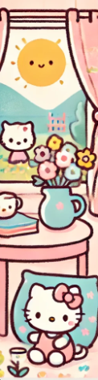
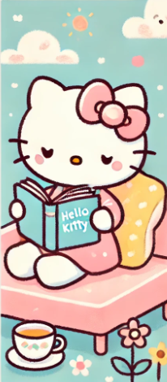

About Hello Kitty
Hello Kitty is one of the most iconic and recognizable characters worldwide, created in 1974 by the Japanese company Sanrio. Her simple yet charming design features a small white cat with a red bow on her ear, and notably, she has no mouth, allowing fans to project their own emotions onto her. Although she started as a character on products like wallets and coin purses, she quickly expanded into a variety of merchandise, including clothing, toys, stationery, and even home accessories.
Over the years, Hello Kitty has become a cultural phenomenon, transcending the borders of Japan and gaining a global following. In addition to her presence on products, Hello Kitty has starred in various TV series, movies, and books, establishing herself as a symbol of cuteness and friendship. With her message of positivity and universally accessible image, Hello Kitty remains one of the most beloved and admired figures for people of all ages. 🌸
Gallery

